13 HARJOITUS 2.5: PÄÄSYNHALLINTA
Harjoituksen sisältö
Harjoituksessa tutustutaan erilaisiin turvallisuusasetuksiin ja luodaan käyttäjiä ja rooleja. Asetetaan käyttöoikeuksia palveluille, aineistoille ja käyttäjille.
Harjoituksen tavoite
Harjoituksen jälkeen opiskelija osaa asettaa palvelimen perusasetuksia, luoda käyttäjiä ja rooleja. Opiskelija osaa myös asettaa käyttöoikeuksia palveluille ja aineistoille.
Arvioitu kesto
40 minuuttia.
13.1 GeoServerin yleiset turvallisuusasetukset
Avaa Security → Settings. Tässä näkymässä voit määritellä yleisesti käytössä olevia turvallisuusasetuksia.
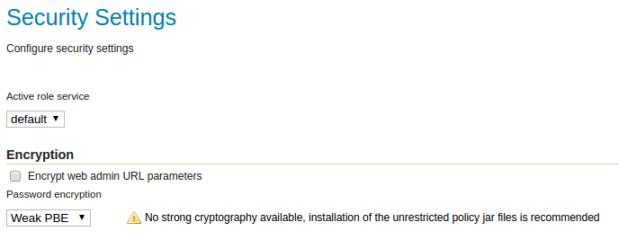
Tässä näkymässä voidaan myös määrittää, mikä Active role service (roolipalvelu) on käytössä. GeoServer sallii valittavaksi vain yhden roolipalvelumuodon palvelimelle. Roolipalvelu sisältää kaikki palvelimen käyttäjä-, ryhmä- ja roolisäännöt. Pidetään default-roolipalvelu käytössä.
Encryption-kohdan alta löytyy salaukseen liittyviä asetuksia. Encrypt web admin URL parameter -valinta salaa käyttäjäliittymän URL-parametreja selaimella.
Esimerkiksi, Security-valikon selaimen URL (missä nyt ollaan)…
… ilman salausta on:
… salauksen kanssa se on:
Huomaa, että palvelimessa ei ole asennettu Java policy -tiedostoja, joten vahvaa salausta ei voida ottaa käyttöön.
Psst! Java policy -tiedostojen asennus riippuu siitä, mikä Java ohjelmisto on palvelimessa asennettu. Jos asennettu on Open JDK, niin policy-tiedostot on oletuksena asennettu ja Strong cryptography käytössä. Jos taas asennetaan Oracle Java (joka on aikaisemmin ollut GeoServerin suositus) niin täytyy ladata Oraclen JCE policy jars ja purkaa ne JRE_HOME/lib/security -kansioon, jonka jälkeen Strong cryptography on käytössä.
Password encryption määrittää, mikä salauksen tyyli on käytössä salasanojen varastossa: Plain text, Weak PBE ja Strong PBE.
Pidä Weak PBE ja paina Save.
13.2 Tunnistautuminen
Authentication-asetusten (tunnistautuminen) kautta määritellään, miten GeoServer kerää käyttäjätunnuksia ja verifioi niitä.
Oletuksena GeoServerin asetukset sallivat palvelimen käytön (eli WMS-, WFS- ja WCS-palvelujen käytön) ilman mitään käyttäjätunnusta. Voit tarkistaa tämän seuraavasti.
Esikatsele tasoa ilmakuvat_keskusta samalla tavalla kuin aiemmin muita tasoja. Taso aukeaa selaimella ongelmitta, koska olet kirjautunut admin-tunnuksella. Älä sulje esikatselusivua vielä.
Mene nyt takaisin GeoServerin ylläpitosivulle ja paina Logout.
Palaa esikatselusivulle ja lataa sivu uudelleen painamalla F5. Sivu latautuu edelleen normaalisti.
Muutetaan asetuksia nyt niin, että palvelujen käyttö vaatii käyttäjältä tunnistautumisen, eivätkä kirjautumattomat käyttäjät pysty enää käyttämään palveluja. Avaa taas Security → Authentication, etsi Filter Chains ja paina default-linkkiä.
Valitse nyt Chain filters -kohdasta, Selected-laatikosta anonymous ja siirrä se Available-laatikkoon käyttäen laatikkojen välistä löytyviä siirtonuolia. Anonymous-tunnistautumistyyli sallii palveluiden käytön tunnistautumattomille käyttäjille.

Nyt ainoastaan basic-tunnistautumisen tyyli on Selected-laatikossa eli käytössä. Tämä tarkoittaa sitä, että jatkossa tarvitaan aina tunnus ja salasana palvelimen käyttöön.
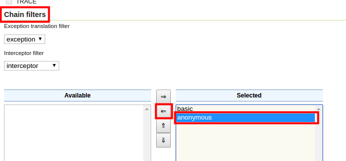
Paina nyt Close ja pääset takaisin Authentication valikkoon. Paina sitten Save, niin muutokset tulevat voimaan.
Jos kirjaudut nyt ulos GeoServeristä ja päivität aiemmin avattua esikatselusivua uudelleen, tunnuksella ja salasanalla tunnistautuminen on pakollista.
Psst! Palvelimen pääsynhallinnan asetuksia voi helpoiten testata käyttämällä eri web-selainta (Internet Explorer / FireFox / Chrome) tai selaimen yksityisyyden salaavaa toimintoa (Incognito-mode) normaalin selaimen rinnalla. Toisella selaimella ollaan kirjautuneet ylläpitäjän tunnuksilla (kuten tähän asti) ja toisella kokeillaan erilaisia kirjautumistiloja. Voit kysyä opastusta kouluttajalta tarvittaessa. Huomaa, että mahdollisesti sinun täytyy kirjautua ulos ja uudelleen sisään asetusten uudelleen lataamista varten.
13.3 Uuden roolin ja käyttäjän luominen
GeoServerin pääsynhallinnassa keskeisessä asemassa ovat käyttäjä-, ryhmä- ja rooliasetukset.
Luodaan nyt uusi käyttäjä, jolla on vain oikeuksia käsitellä helsinki-workspace:n aineistoa.
Avaa päävalikosta Security → Users, Groups, and Roles.
Services-välilehdestä löytyvät käyttäjien ja roolien pääsynhallinnan asetukset. Niihin tallennetaan tietoja siitä, ketkä käyttäjät kuuluvat mihinkin ryhmään tai mitä rooleja on ylipäätänsä määritelty pääsynhallinnassa.
Listalla on GeoServerin luomia default-asetuksia. Käytetään niitä nyt hyväksi.
Luodaan ensin rooli, johon uusi käyttäjä tulee kuulumaan.
Psst! Pääsynhallinnan hallinnoimisen helpottamiseksi, oikeudet määritellään roolikohtaisesti.
Avaa Roles-välilehti ja paina Add new role, anna uudelle roolille nimeksi hki_rooli.
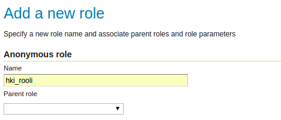
Paina sitten Save.
Luodaan nyt uusi käyttäjä. Avaa Users/Groups -välilehti.
Huomaa, että täällä on määritelty admin-tunnus, jota olet käyttänyt koulutuksen aikana.

Luo uusi käyttäjä painamalla Add new user.
Laita käyttäjän nimeksi hki_kayttaja ja salasanaksi hki-kayttaja.
Psst! Huomaa, että erikoismerkit ja ääkköset ovat sallittuja GeoServerissä, mutta tarkoituksenmukaisuuden ja eri selainten välisten erojen vuoksi tässä koulutuksessa vältetään niiden käyttöä.
Uudelle käyttäjälle annetaan oikeuksia määrittämällä mitä rooleja käyttäjällä on. Roolit on määritelty Roles taken from active role service: default -kohdassa. Siinä on valittavissa muun muassa hki_rooli, lisää se Selected Roles -laatikkoon käyttäen laatikkojen välistä löytyviä siirtonuolia.
Paina sitten Save,niin uusi käyttäjä hki_kayttaja on luotu ja sillä on oikeudet hki_rooli:nmukaisesti. Koska hki_rooli:lle ei vielä ole määritelty oikeuksia, niin uudella käyttäjälläkään ei ole vielä määritelty mitään oikeuksia.
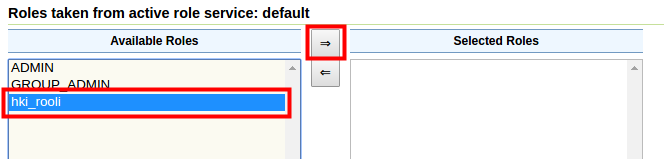
Kokeile uuden käyttäjän oikeudet kirjautumalla sisään uudella käyttäjätunnuksella. Voit joko kirjautua uudestaan tai käyttämällä toista selainta, kuten aikaisemmin on mainittu.
13.4 Aineiston käyttöoikeuksien rajoittaminen
Avaa Security → Data. Tässä näkymässä näkyvät GeoServer-palvelimen käyttäjille (rooleille) määritetyt säännöt. Oletusasennuksessa vain kaksi sääntöä on määritelty eli luku (r) ja kirjoitusoikeudet (w):
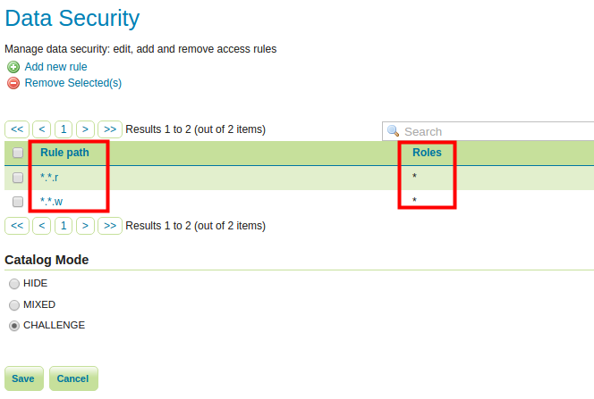
Rule path -sarakkeen alla olevat säännöt ovat muodoltaan *.*.r, joka antaa lukemisoikeudet kaikille tasoille kaikissa workspace:ssa.
Huomaa vielä, että Roles-sarakkeen alla on määritelty, mille rooleille oikeudet on myönnetty. Tässä on määritelty *-merkillä, joka tarkoittaa “kaikki roolit”.
Seuraava kuva esittää GeoServerin aineistosääntöjen määrittelyä:
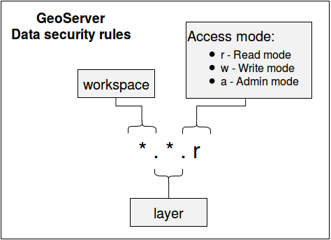
Sääntö koostu kolmesta osasta, pisteellä eroteltuina. Ensimmäinen osa määrittelee workspacen, jolla sääntö on voimassa. Toinen osa määrittelee tason (layer), jolla sääntö on voimassa. Kolmas ja viimeinen osa määrittelee, mikä toiminto sallitaan. Toimintoja on kolme: lukeminen (r = read), kirjoittaminen (w = write) ja ylläpitäminen (a = admin).
Psst! Kaikissa osissa voidaan käyttää myös *-merkkiä, jolla voidaan viitata kaikkiin workspaceihin, tasoihin tai oikeuksiin.
Paina listalta *.*.r.
Tässä säännössä määritellään, että kaikkiin workspace:ihin ja kaikkiin tasoihin on lukemisoikeus.
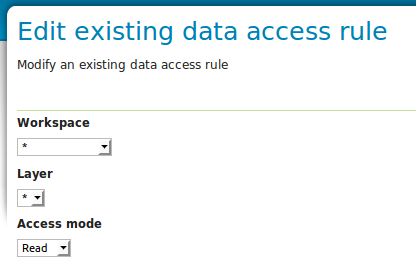
Roles-osion alla on määritelty se, että tämä sääntö kuuluu kaikille rooleille (Grant access to any role). Huomaa, että Grant access to any role on rastittu, joten kaikki roolit voivat lukea kaikki tasoja kaikista workspace:sta.
Rajoitetaan nyt sääntöä vain ylläpitäjien rooleille.

Rastita pois Grant access to any role ja lisää roolit Admin ja GROUP_ADMIN laatikkoon Selected Roles.
Paina lopuksi Save.
Tee lopuksi samat muutokset *.*.w -säännölle.

Näiden muutosten jälkeen, vain Admin-tunnuksella on lukemis- ja esikatseluoikeudet.
Kokeile nyt esikatsella jotain aineistoja hki_kayttaja-tunnuksella, yhtään aineistoa ei ole tarjolla.
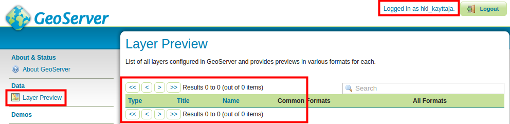
13.5 Aineiston käyttäjäkohtaiset käyttöoikeudet
Seuraavaksi määritellään hki_kayttaja-tunnukselle luku- ja kirjoitusoikeudet helsinki-workspace:en. Käytännössä pitää määritellä oikeudet roolille johon käyttäjä kuuluu, eli hki_rooli-roolille.
Tähän asti hki_rooli:lle ei ole annettu vielä mitään oikeuksia, täten hki_kayttaja:llä ei ole enää oikeuksia mihinkään aineistoon (ellei joku sääntö on määritelty kaikille rooleille käyttäen *-merkkiä).
Lisätään nyt hki_kayttaja:lle Read- ja Write-käyttöoikeudet, mutta vain helsinki-workspace:en. Tämä tapahtuu määrittämällä lisää aineiston sääntöjä.
Psst! Varmista, että olet kirjautunut ylläpitäjänä (tunnus: admin ja salasana: gispo).
Avaa taas Security → Data ja lisää nyt kaksi uutta sääntöä käyttäen Add new rule -valintaa.
Laita Workspace-kohtaan helsinki ja jätä Layer-arvoksi “*”, joka viittaa kaikkiin tasoihin.
Aseta Access mode -valikkoon arvoksi Read, joka antaa lukemisoikeudet edellä määrätyille aineistoihin.
Siirrä lopulta hki_rooli laatikosta Available Roles, laatikkoon Selected Roles.

Paina lopuksi Save.
Nyt hki_kayttaja:llä on read-oikeudet kaikkiin helsinki workspace:n tasoihin.
Lisää samalla tavalla vielä Write. Kirjoitusoikeudet sallivat käyttäjälle aineistojen muokkausoikeudet aina kun se on sallittu GeoServerissa, esimerkiksi WFS-T-palvelun kautta.
Kokeile uudelleen esikatsella aineistoja hki_kayttaja-tunnuksella. Esikatselu on mahdollista nyt kaikkien helsinki-workspacen tasojen kanssa, mutta muut tasot eivät näy.
Huomaa, että käyttäjällä ei ole kuitenkaan oikeuksia lisätä GeoServeriin uusia aineistoja tai tasoja. Voit antaa hki_kayttaja-tunnukselle Admin-oikeudet määrittämällä vielä ylläpitäjän oikeudet.
Loppujen lopuksi on luotu kolme uutta sääntöä, jotka ovat hki_rooli:lla voimassa.
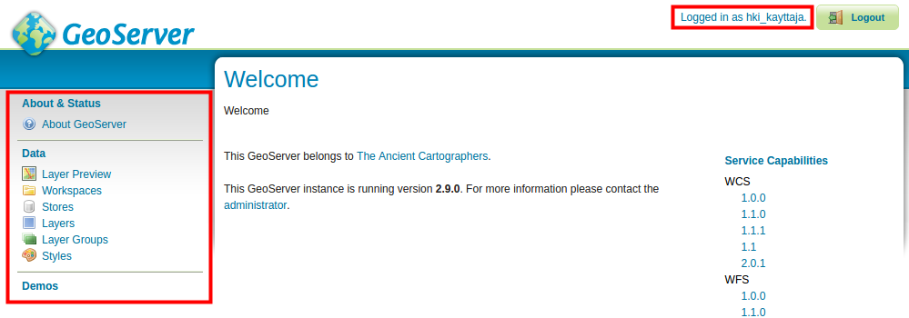
Kirjaudu uudelleen palvelimelle käyttäen hki_kayttaja-tunnusta ja tarkista, että helsinki-workspacen tasot ovat käytettävissä ja aineiston ylläpitäminenkin onnistuu. Huomaa, että muut workspacet eivät näy lainkaan.
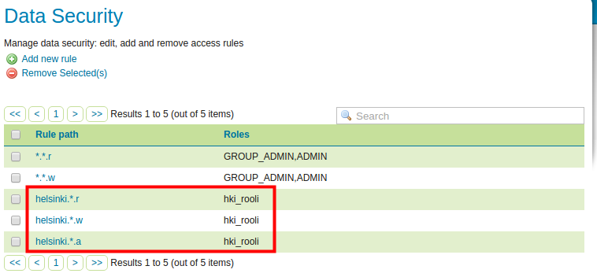
13.6 Karttapalvelukohtaiset oikeudet
Kirjaudu admin-tunnuksella uudelleen Geoserver palvelimelle.
Samalla tavalla kuin äsken määriteltiin käyttäjäkohtaisesti oikeudet yhdelle workspace:lle, voidaan asettaa oikeudet palvelukohtaisesti eri käyttäjille.
Avaa Security → Services. Määriteltynä on oletuksena vain yksi sääntö *.*. Samalla tavalla kuin aiemmin, tämä tarkoittaa se, että kaikki palvelujen toiminnot (säännön toinen *-merkki) ovat käytettävissä kaikissa palveluissa (säännön ensimmäinen *-merkki).
Seuraava kuva esittää GeoServerin palvelusääntöjen määrittelyä:

Avaa sääntö *.* ja rajoita sen käyttöä vain ylläpitäjille.

Paina Save. Nyt GeoServerin palvelut ovat käytettävissä ainoastaan ylläpito-rooleille.
Luo sen jälkeen sääntö, joka on käytössä vain hki_rooli:lle ja sillä on oikeudet käyttää kaikkia WMS-karttapalvelujen toimintoja.
Psst! Huomaa, että säännöt eivät välttämättä tule voimaan kuin vasta käyttäjän seuraavalla istunnolla.
Lopussa Service access rules list -näkymä näyttää tältä:
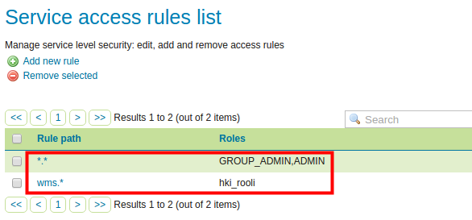
Kirjaudu taas hki_kayttaja:nä ja kokeile esikatsella jotain aineistoa sekä WMS- että WFS-karttapalveluna. WFS-esikatselu ei enää onnistu, koska kyseisellä käyttäjällä ei ole oikeuksia WFS-toimintoihin, vain WMS-toimintoihin.
Poista lopuksi edellisessä kuvassa näkyvä sääntö (wms.*), jotta wms-palvelu olisi taas käytettävissä kaikilla käyttäjillä.